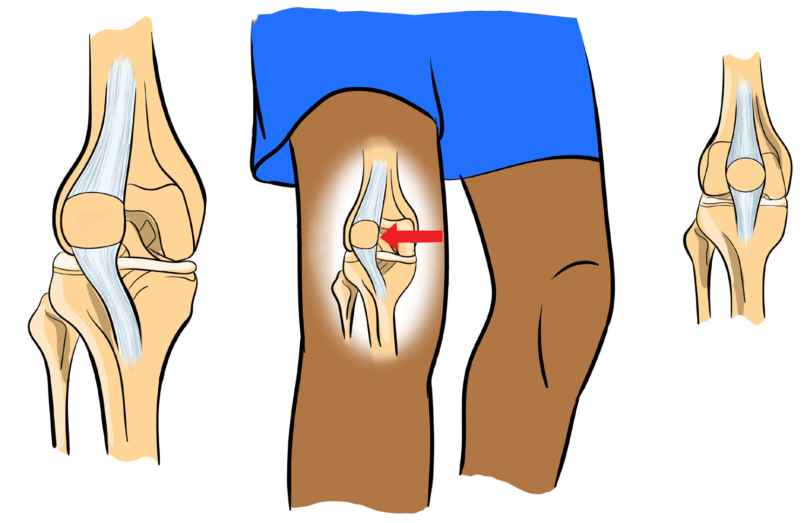
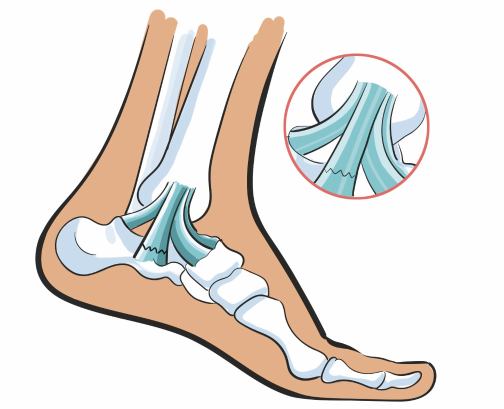

Dislocated
Normal position
Sprain
Sprain is an overstretch or tearing of ligament that occurs when the joint is forced to move beyond its limit, as shown in Figure 2.4. It is a result of sudden or un expected wrenching movement of the joint. This injury can be minor or quite serious. Once ligament is ruptured, it requires extensive medical treatment.
